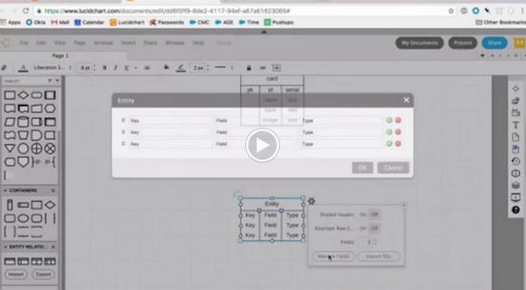

Using Lucidchart for Database Design
2017-01-13
tl;dr
This screencast will give you a quick introduction to database design. We will use Lucidchart as a tool to design a database schema for a set of poker cards.

Transcript
- Create an account and login to Lucidchart
- Explore an example entity relationship diagram
- Show “manage fields” menu
- Export to SQL
- Describe a card set
- card set is a set of cards of course but what does that mean for the data model
- card
- card_set
- card_set_card
- Design Card table
- Show queen of hearts image
- Create a new ERD object with 3 columns
- Manage fields
- Fields are “name”, “type”, “image”
- We use “type” instead of “suit”. We could use same generalized model for Uno or other cards games as well as flashcards for studying. Discuss the compromise of DSLs/jargon vs generalizing/premature-optimization.
- Types are text, text, text
- Refer to Postgres docs for data types
- None of these columns are unique, so get rid of keys
- Add an “id” column of type “serial” and “pk”
- Design CardSet table
- Describe attributes of a card set
- Create a new ERD object
- Fields are “id” serial and “name” text
- Design CardSetCard table
- Describe intersection table for having cards reused in many sets
- Create a new ERD object
- “id” serial , “card_id” integer, “card_set_id” integer
- FK to relate to other tables
- “id” does not need to be a key since we won’t lookup with this column. Still needs to be unique. We’ll add this constraint later.
- Use bigint 8-bit since we won’t increment. Serial is 4-bit unsigned.
- Draw key constraints
- Vertical align the three tables
- Left-align text
- Set same width
- Turn on table coloring
- Draw relationship from PK to FK
- Change to one-to-one relationships
- Export to SQL
- Choose PostgreSQL
- Validate SQL
- Use SQLFiddle
- Choose PostgreSQL
- Build schema
- Save as “1-create-tables.sql”
Next post in this series
Getting Started with PostgreSQL on Heroku